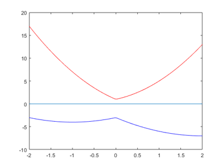

DEMOPOLYNOM Short demo of the polynom toolbox
Contents
- Definition of a univariate polynomial
- Access to coefficients, exponents and variables I
- Definition of a multivariate polynomial
- Random polynomials
- Access to coefficients, exponents and variables II
- Display of polynomials
- Operations between polynomials
- Interval polynomials
- Plot of polynomials
- Access of coefficients I
- Access of coefficients II
- Subpolynomials
- Polynomial evaluation
- Interval polynomial evaluation
- Evaluation of subpolynomials
- Derivatives of polynomials
- Bernstein polynomials
- Polynomial evaluation and Bernstein polynomials
- Inclusion of roots of polynomials
- Inclusion of clustered or multiple roots of polynomials
- Quality of the computed bounds
- Quality of the computed bounds for coefficients with tolerances
- Sylvester matrix
- Predefined polynomials
- Enjoy INTLAB
format compact short setround(0) % set rounding to nearest
Definition of a univariate polynomial
The simplest way to generate a univariate polynomial is (like in Matlab) by
p = polynom([1 -3 0 4])
polynom p[x] =
1.0000 x^3
-3.0000 x^2
4.0000
Note we use the German word Polynom, saving three letters :)
It generates a polynomial (of the INTLAB data type "polynom") with coefficients 1, -3, 0 and 4. Note that the coefficient corresponding to the highest exponent is specified first, and that the default dependent variable is "x". Another variable can be specified explicitly, e.g. by
q = polynom([1 0 -2],'y')
polynom q[y] =
1.0000 y^2
-2.0000
Access to coefficients, exponents and variables I
There is direct access to the vector of polynomial coefficients (starting with the largest exponent), the vector of exponents and the independent variable in use:
coeff = q.c expon = q.e vars = q.v
coeff =
1 0 -2
expon =
2
vars =
'y'
The polynomial may also be specified by the individual coefficients and exponents. The polynomial p, for example, is also generated as follows:
polynom([1 -3 4],[3 2 0])
polynom ans[x] =
1.0000 x^3
-3.0000 x^2
4.0000
Definition of a multivariate polynomial
A multivariate polynomial is generated by specifying coefficients and corresponding exponents. An example is
P = polynom([-3 4 9],[2 3;4 0;2 2],{'a' 'b'})
polynom P[a,b] =
4.0000 a^4
-3.0000 a^2 b^3
9.0000 a^2 b^2
Random polynomials
A multivariate polynomial may generated randomly by
Q = randpoly(4,2)
polynom Q[x1,x2] =
-0.1997 x1^2
0.2469 x1 x2^2
0.8899 x1 x2
-0.8120 x2
-0.4930
where the first parameter specifies the degree and the second the number of variables. Note that the variables are "x1", "x2", ... by default. This may be changed by specifying other variable names explicitly:
QQ = randpoly(4,2,{'var1' 'var2'})
polynom QQ[var1,var2] =
0.4912 var1^4 var2^2
-0.8745 var1^2 var2^3
-0.1344 var1 var2^2
-0.4434 var1 var2
0.0067 var2^4
-0.7536 var2
Access to coefficients, exponents and variables II
As before there is also direct access to the polynomial coefficients, the exponents and the independent variables for multivariate polynomials:
coeff = QQ.c expon = QQ.e vars = QQ.v
coeff =
0.4912
-0.8745
-0.1344
-0.4434
0.0067
-0.7536
expon =
4 2
2 3
1 2
1 1
0 4
0 1
vars =
1×2 cell array
{'var1'} {'var2'}
Display of polynomials
Univariate polynomials may be displayed in dense or sparse mode, for example
format upolyvector
p
polynom p[x] =
1 -3 0 4
format upolysparse
p
polynom p[x] =
1.0000 x^3
-3.0000 x^2
4.0000
Operations between polynomials
Operations between univariate polynomials are as usual
p, 3*p+1
polynom p[x] =
1.0000 x^3
-3.0000 x^2
4.0000
polynom ans[x] =
3.0000 x^3
-9.0000 x^2
13.0000
and may produce multivariate polynomials if not depending on the same variable:
q, p+q
polynom q[y] =
1.0000 y^2
-2.0000
polynom ans[x,y] =
1.0000 x^3
-3.0000 x^2
1.0000 y^2
2.0000
Interval polynomials
Interval polynomials are specified in the same way as before. Consider, for example (taken from Hansen/Walster: Sharp Bounds for Interval Polynomial Roots, Reliable Computing 8(2) 2002)
format infsup
r = polynom([infsup(1,2) infsup(-4,2) infsup(-3,1)])
intval polynom r[x] = [ 1.0000, 2.0000] x^2 [ -4.0000, 2.0000] x [ -3.0000, 1.0000]
The polynomial may be displayed using other interval formats, for example
format midrad
r
intval polynom r[x] = < 1.5000, 0.5000> x^2 < -1.0000, 3.0000> x < -1.0000, 2.0000>
Plot of polynomials
The following plots the lower and upper bound polynomial within root bounds:
plotpoly(r)
or within specified bounds:
plotpoly(r,-2,2)
Access of coefficients I
In contrast to Matlab, coefficients of INTLAB polynomials are set and accessed as in mathematics:
q = p+1 coeff3 = q(3) q(0) = -2 q(0:2) = 4.7
polynom q[x] =
1.0000 x^3
-3.0000 x^2
5.0000
coeff3 =
1
polynom q[x] =
1.0000 x^3
-3.0000 x^2
-2.0000
polynom q[x] =
1.0000 x^3
4.7000 x^2
4.7000 x
4.7000
Access of coefficients II
Access of coefficients for multivariate polynomials works the same way by specifying the position for the individual variables:
P = polynom([-3 4 9],[2 3;4 0;2 2],{'a' 'b'})
coeff23 = P(2,3)
P(1,4) = -9
polynom P[a,b] =
4.0000 a^4
-3.0000 a^2 b^3
9.0000 a^2 b^2
coeff23 =
-3
polynom P[a,b] =
4.0000 a^4
-3.0000 a^2 b^3
9.0000 a^2 b^2
-9.0000 a b^4
Subpolynomials
Subpolynomials may be accessed by specifying certain unknowns as []. This corresponds to a distributive representation of the polynomial:
P Q = P(2,[])
polynom P[a,b] =
4.0000 a^4
-3.0000 a^2 b^3
9.0000 a^2 b^2
-9.0000 a b^4
polynom Q[b] =
-3.0000 b^3
9.0000 b^2
Polynomial evaluation
There are two (equivalent) possibilities of polynomial evaluation, by polyval or by {}:
p = polynom([1 -3 0 4])
polyval(p,2)
p{2}
polynom p[x] =
1.0000 x^3
-3.0000 x^2
4.0000
ans =
0
ans =
0
Interval polynomial evaluation
Of course, verified bounds are obtained in the well known ways:
polyval(intval(p),2)
p{intval(2)}
intval ans = < 0.0000, 0.0000> intval ans = < 0.0000, 0.0000>
Polynomial evaluation for multivariate polynomials works the same way:
P = polynom([-3 4 9],[2 3;4 0;2 2],{'a' 'b'})
polyval(P,2,3)
P{2,intval(3)}
polynom P[a,b] =
4.0000 a^4
-3.0000 a^2 b^3
9.0000 a^2 b^2
ans =
64
intval ans =
< 64.0000, 0.0000>
Evaluation of subpolynomials
In addition, evaluation of sub- (or coefficient-) polynomials is possible by specifying certain unknowns as []. Unknowns specified by [] are still treated as independent variables. In this case the argument list must be one cell array:
polyval(P,{2,[]})
P{{[],intval(3)}}
polynom ans[b] = -12.0000 b^3 36.0000 b^2 64.0000 intval polynom ans[a] = < 4.0000, 0.0000> a^4
Derivatives of polynomials
First and higher polynomial derivatives are calculated by
p p' pderiv(p,2)
polynom p[x] =
1.0000 x^3
-3.0000 x^2
4.0000
polynom ans[x] =
3.0000 x^2
-6.0000 x
polynom ans[x] =
6.0000 x
-6.0000
or, for multivariate polynomials, by specifiying the variable:
P = polynom([-3 4 9],[2 3;4 0;2 2],{'a' 'b'})
pderiv(P,'a')
pderiv(P,'b',2)
polynom P[a,b] =
4.0000 a^4
-3.0000 a^2 b^3
9.0000 a^2 b^2
polynom ans[a,b] =
16.0000 a^3
-6.0000 a b^3
18.0000 a b^2
polynom ans[a,b] =
-18.0000 a^2 b
18.0000 a^2
Bernstein polynomials
A simple application is the computation of Bernstein coefficients. Consider
P = polynom([2 -3 0 3 1 -2])
polynom P[x] =
2.0000 x^5
-3.0000 x^4
3.0000 x^2
1.0000 x
-2.0000
Suppose, we wish to expand the polynomial in the interval [-1,1]. Since Bernstein coefficients B_i are calculated with respect to [0,1], we first transform the polynomial:
Q = ptrans(P,-1,1,0,1); B = bernsteincoeff(Q)
polynom B[x] =
1.0000 x^5
-1.0000 x^4
-1.0000 x^3
-5.4000 x^2
1.8000 x
-5.0000
For convenient use, the Bernstein coefficients are stored in a polynomial such that B(i) is the i-th Bernstein coefficient for i=0:n.
Polynomial evaluation and Bernstein polynomials
The convex hull of Bernstein points B contains the convex hull of the polynomial:
plotpoly(P,-1,1); hold on plotbernstein(B,-1,1) hold off
This picture is not untypical. The Bernstein points overestimate the true range, but sometimes not too much. To obtain a true inclusion of the range, we perform the computation with verified bounds:
format infsup
Q = ptrans(intval(P),-1,1,0,1);
B = bernsteincoeff(Q),
X = P{infsup(-1,1)},
Y = infsup(min(B.c.inf),max(B.c.sup))
intval polynom B[x] = [ 1.0000, 1.0000] x^5 [ -1.0001, -0.9999] x^4 [ -1.0000, -0.9999] x^3 [ -5.4001, -5.3999] x^2 [ 1.7999, 1.8001] x [ -5.0000, -5.0000] intval X = [ -11.0000, 7.0000] intval Y = [ -5.4001, 1.8001]
From the picture we read the true range [-5,1] which is slightly overestimated by Y computed by the Bernstein approach. The same principle can be applied to multivariate polynomials.
Inclusion of roots of polynomials
Roots of a univariate polynomial can approximated and included. Consider a polynomial with roots 1,2,...,7:
format long p = polynom(poly(1:7)) roots(p) % approximations of the roots
polynom p[x] = 1.0e+004 * 0.00010000000000 x^7 -0.00280000000000 x^6 0.03220000000000 x^5 -0.19600000000000 x^4 0.67690000000000 x^3 -1.31320000000000 x^2 1.30680000000000 x -0.50400000000000 ans = 6.999999999999008 6.000000000002801 4.999999999997638 4.000000000000223 3.000000000000553 1.999999999999781 1.000000000000020
Based on some approximation (in this case near 4.1), verified bounds for a root are obtained by
verifypoly(p,4.1)
intval ans = [ 3.99999999999739, 4.00000000000329]
Note that the accuracy of the bounds is of the order of the (usually unknown) sensitivity of the root.
Inclusion of clustered or multiple roots of polynomials
The routine "verifypoly" calculates verified bounds for multiple roots as well. Consider the polynomial with three 4-fold roots at x=1, x=2 and x=3:
format short midrad p = polynom(poly([1 1 1 1 2 2 2 2 3 3 3 3])); roots(p)
ans = 3.0063 + 0.0000i 2.9936 + 0.0000i 3.0000 + 0.0064i 3.0000 - 0.0064i 2.0074 + 0.0000i 1.9927 + 0.0000i 2.0000 + 0.0074i 2.0000 - 0.0074i 1.0016 + 0.0000i 0.9984 + 0.0000i 1.0000 + 0.0016i 1.0000 - 0.0016i
Based on some approximation (in this case 2.001), verified bounds for a multiple root are obtained by
verifypoly(p,2.001)
intval ans = < 2.0000, 0.0051>
Note that the accuracy of the bounds is of the order of the sensitivity of the root, i.e. of the order eps^(1/4) = 1.2e-4. The multiplicity of the root is determined as well (for details, see "verifypoly").
[X,k] = verifypoly(p,2.999)
intval X =
< 3.0000, 0.0053>
k =
4
Quality of the computed bounds
One may argue that the previous inclusion is rather broad. But look at the graph of the polynomial near x=3:
p = polynom(poly([1 1 1 1 2 2 2 2 3 3 3 3]));
plotpoly(p,2.99,3.01)
title('Floating point evaluation of p near x=3')
Quality of the computed bounds for coefficients with tolerances
Due to rounding and cancellation errors the accuracy of the inclusion is about optimal. Things are even more drastic when the polynomial coefficients are afflicted with tolerances. Put smallest possible intervals around the coefficients of p and look at the graph. Between about 2.993 and 3.007 the lower and upper bound enclose zero.
P = polynom(midrad(p.c,1e-16));
plotpoly(P,2.99,3.01)
title('Interval polynomial P near x=3')
Sylvester matrix
The Sylvester matrix of two polynomials p,q is singular if and only if p and q have a root in common. Therefore, the Sylvester matrix of p and p' may determine whether p has multiple roots. Note, however, that this test is not numerically stable.
format short p = polynom(poly([2-3i 2-3i randn(1,3)])) % polynomial with double root 2-3i roots(p) S = sylvester(p); % Sylvester matrix of p and p' format short e svd(S)
polynom p[x] = 1.0000 + 0.0000i x^5 -5.4696 + 6.0000i x^4 1.3974 - 20.8177i x^3 5.2709 + 20.7491i x^2 -2.5896 - 6.2353i x 0.0065 + 0.0156i ans = 2.0000 - 3.0000i 2.0000 - 3.0000i 0.8846 - 0.0000i 0.5825 + 0.0000i 0.0025 - 0.0000i ans = 1.4433e+02 1.0826e+02 6.7054e+01 3.4015e+01 1.4027e+01 1.4196e+00 1.0336e+00 5.9564e-02 2.2366e-15
Predefined polynomials
There are a number of predefined polynomials such as Chebyshev, Gegenbauer, Hermite polynomials etc.
Enjoy INTLAB
INTLAB was designed and written by S.M. Rump, head of the Institute for Reliable Computing, Hamburg University of Technology. Suggestions are always welcome to rump (at) tuhh.de